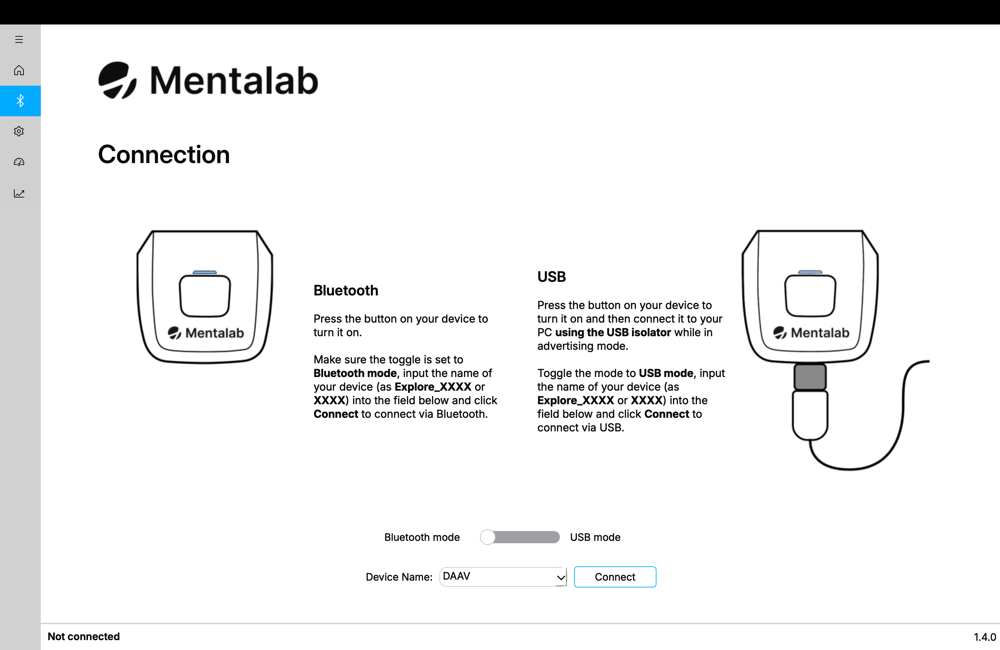
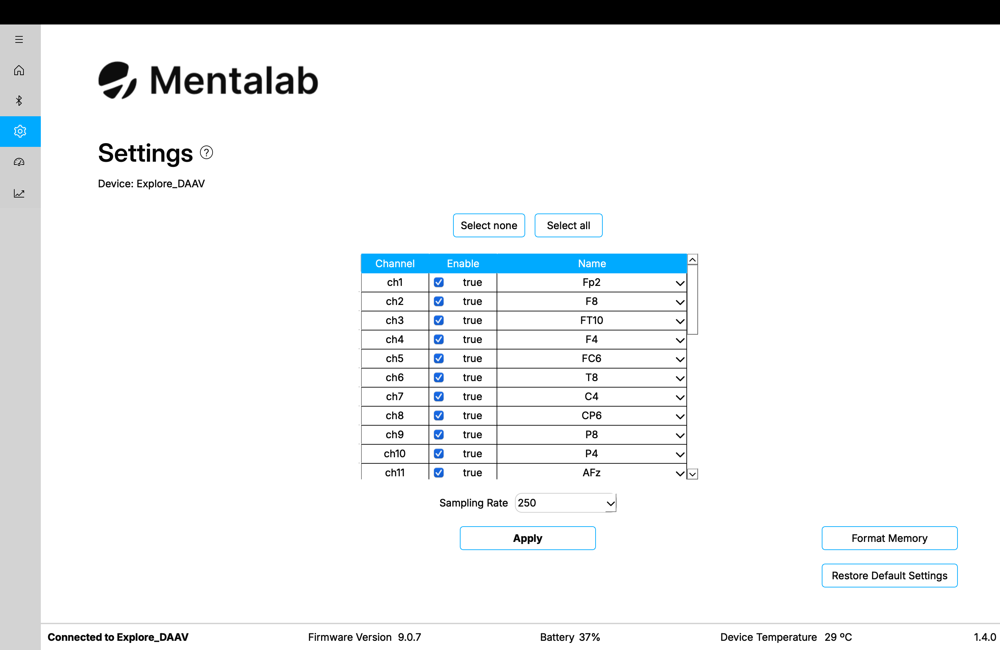
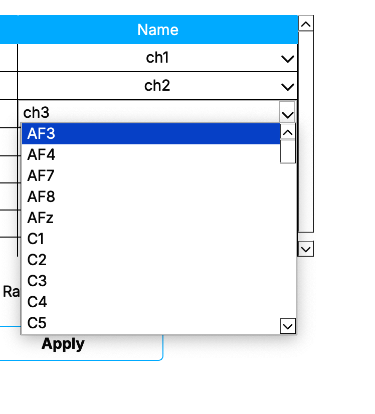
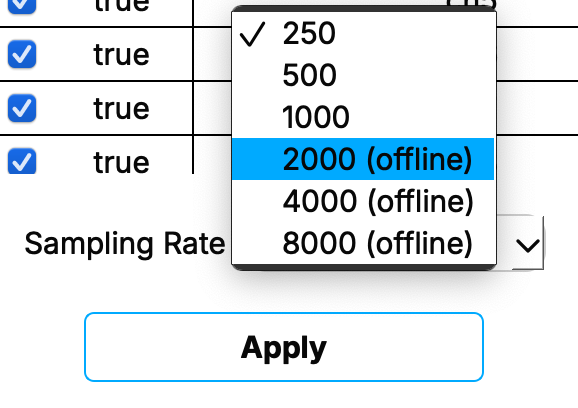

Explore Desktop Usage
Connect
Under normal usage, Explore Desktop will open to the Connect page. Use this page to connect to your Mentalab Explore device.

Ensure that your device is in advertising mode. You can verify this with the LED Light Guide.
Write the device ID in the dropdown input line and press Connect. The device will connect within a few seconds.
Follow the onscreen instructions for connection via Bluetooth streaming or USB streaming.
| Use the USB Streaming Isolator (UI) during USB streaming. |
Once your device is connected, the status bar will change.
If your device is not found, you will receive an error.
The Connection page lets you connect to a device via Bluetooth or USB. USB is only available for Explore Pro.
| The USB mode available with Explore Pro is for streaming only. In this mode, you cannot retrieve recordings from the device memory. To access the device memory, refer to the respective section in the User Guide. |
Configuration
Once your Mentalab Explore device is connected, the Settings page becomes accessible. This page displays the name of your connected device and a set of configuration options for that device.

Active channels
To enable and disable ExG channels on your Mentalab Explore device, select or deselect the channel’s associated checkbox under the Enable column and click Apply.
You can also use Select none and Select all to quickly disable or enable all channels, regardless of their current state.
Only active channels, meaning channels whose checkbox is selected, are shown on the Visualization and Impedance Measurement pages.
Channel names
To change the name of a channel, edit the name under the Name column and click Apply.
You can change names in either of the following ways:
-
Click the name and enter your own channel name.
-
Click the drop-down arrow and select a standard position from the dropdown list.
The selected name is used on the Visualization and Impedance Measurement pages, as well as in recorded files.

Sampling rate: online and offline
To set the sampling rate of your Mentalab Explore device, select the desired sampling rate from the sampling rate drop-down menu.
The available sampling rates depend on your device type and are measured in Hertz. Click [Apply] to confirm.
Explore Desktop allows you to select online and offline sampling rates. Offline sampling rates are marked with (offline).
| When selecting an offline sampling rate, visualization of ExG data is not possible. However, you can still change device settings while an offline sampling rate is active. |
| You can change the sampling rate and active channels of your device simultaneously. |

Sampling rates that are offline-only are marked with (offline). Switching to these disables streaming channel data. In this mode, the device still records to its internal memory.
Export settings
In the menu bar, click .
Select the name and location where the settings file should be saved, then click Save.
Device settings are saved in .yaml format.
Import settings
In the menu bar, click .
Select the file to import and click Open. The settings from the selected file are imported and applied.
Alternatively, import the settings from the latest session by clicking .
Format memory
To format the memory of your Mentalab Explore device, select Format Memory.
A confirmation pop-up will appear.
| After confirming that you want to format the memory of your device, all binary files stored on that device are deleted and cannot be recovered. |
Reset settings
To reset the settings of your Mentalab Explore device, select Restore Default Settings.
The device disconnects, and all settings return to their default values:
-
250 Hz sampling rate
-
All channels active
If you suspect that something is wrong with your device configuration after connection, resetting the settings may help resolve the issue.
For more information or support, contact support@mentalab.com.
Recording
In the Visualization tab, click Record to open the recording settings popup.
Configure:
-
File format: CSV (extra marker file generated automatically) or BDF+ (24-bit resolution).
-
Output folder & filename prefix (e.g. test_) — outputs like test_ExG.csv, test_ORN.csv, test_Marker.csv.
-
Recording duration (or record indefinitely until stopped manually).
-
(Optional) Filters such as Notch, High-/Low-cutoff.
Start recording; a streaming visualization continues as data is recorded. Use Tools → Inspect ongoing recording to scrub or zoom while streaming. Monitor sampling-rate drift—compare recorded vs. displayed timestamps. Resample later if needed.
|
If using markers, prefer CSV format for better marker timing. |
Visualization
The Visualization tab offers robust real-time dashboards: ExG signals, orientation data (IMU), spectral analysis, bandpower over time.
Controls at top of page:
-
Y-axis scale (1 μV to 100 mV)
-
Time window (5/10/20 s)
-
Filters (Notch, Low/High pass)
-
Event markers toggle
-
LSL push button (for synchronization)
|
Impedance Monitoring & LSL Support
Use the Impedance panel (tabs) to check all electrodes, including ref and ground — ideal for assessing signal cleanliness before recording.
Lab Streaming Layer (LSL) integration:
-
Push live streams, including ExG/debug stream and markers.
-
Enables real-time streaming to tools like LabRecorder for later analysis.
-
Supports multimodal synchronization with external devices.
Export & Data Management
After recording, recorded files are stored in the specified folder.
Export options include:
-
CSV, including marker logs (ideal for trial-based timing).
-
BDF+ for high-precision EEG formats.
Use Explore Desktop for conversion; explorepy may offer scripting for batch exports or advanced processing workflows.
Quick Tips & Troubleshooting
-
If you see pixelation on Windows, reset display scaling to 100%.
-
For macOS users refusing installers, manually add permissions in Privacy & Security.
-
Keep app updated via GitHub for latest features and bug fixes.
-
Contact support@mentalab.com for assistance.